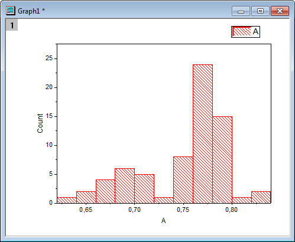
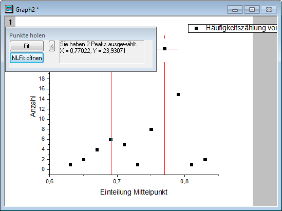
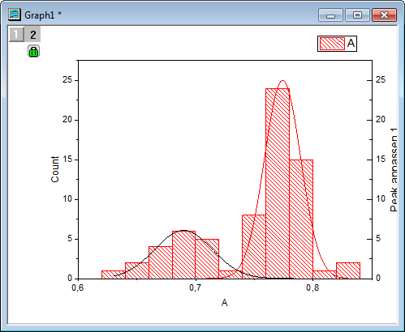

Einem Histogramm mehrere angepasste Kurven hinzufügen
MultiFittedCurve-in-Histogram
Zusammenfassung
Mit Origin können Sie die Peaks aus dem Ergebnis der Häufigkeitszählung anpassen. Außerdem können angepasste Kurven zu dem neuen Layer des Histogramms hinzugefügt werden.
Was Sie lernen werden
- Histogramm zeichnen
- Mit der Häufigkeitszählung Statistikwerte berechnen
- Mit dem Hilfsmittel 'Peaks analysieren' Peaks suchen und eine Anpassung durchführen
- Neue Layer hinzufügen
Schritte
Kopieren Sie die Beispieldaten und fügen Sie sie in Origin ein. Legen Sie die Spalte als Y fest (indem Sie die Spalte markieren und Spalte: Als Y setzen im Origin-Menü wählen). Zeichnen Sie diese Daten als Histogramm, indem Sie im Menü auf klicken.
- 
Häufigkeitszählung
- Markieren Sie die Beispieldaten, öffnen Sie dann den Dialog der Häufigkeitszählung über .
- Klicken Sie zum Fertigstellen auf OK. Ein neues Ergebnisblatt wird erzeugt.
Peaks anpassen
- Wählen Sie Col(Counts) im Blatt FreqCounts1 und öffnen Sie dann den Dialog Mehrere Peaks anpassen über das Menü Analyse: Peaks und Basislinie: Mehrere Peaks anpassen.
- Wählen Sie im aufgerufenen Dialog Gaussian unter Peakfunktion und klicken Sie auf OK.
- Ein Diagrammfenster wird automatisch erzeugt, damit der Anwender Peaks aus dem Diagramm wählen kann. Klicken Sie doppelt auf das Peakzentrum, um einen Peak auszuwählen. Wählen Sie auf diese Weise nacheinander zwei Peaks.

Hinweis: Sie können einmal auf das Peakzentrum klicken und dann die Pfeiltasten nach links oder rechts auf der Tastatur verwenden, um das Zentrum leicht zu verschieben. Sobald Sie dies getan haben, drücken Sie zum Bestätigen die Enter-Taste.
- Die Basislinie muss bei Y = 0 festgelegt werden. Dazu klicken Sie auf die NLFit öffnen, um den Dialog NLFit aufzurufen. Gehen Sie zur Registerkarte Parameter. Setzen Sie den Wert des Parameters y0 auf 0 und aktivieren Sie das Kontrollkästchen Fest. Klicken Sie auf die Schaltfläche Fit, um die Anpassung durchzuführen.
 |
Wenn Ihre Basislinie kompliziert ist oder wenn Sie möchten, dass Origin Peaks mit einer bestimmten Methode automatisch sucht, verwenden Sie bitte Peaks analysieren (wird geöffnet über Analyse: Peaks und Basislinie: Peaks analysieren). Beachten Sie, dass Peaks analysieren leistungsstarke Bedienelemente bietet, die sich nicht nur für die zwei erwähnten Fälle eignen.
|
- Es werden zwei Blätter, nlfitpeaks1 und nlfitpeaksCurve1, zur Quellarbeitsmappe hinzugefügt, die den Anpassungsbericht und die Daten der angepassten Kurve enthalten.
Angepasste Kurven hinzufügen
- Aktivieren Sie das Histogramm und fügen Sie einen Layer hinzu, indem Sie Einfügen: Neuer Layer (Achsen): Rechte Y im Hauptmenü auswählen.
- Klicken Sie doppelt auf das Symbol Layer2, um den Dialog Layerinhalt zu öffnen.
- Halten Sie die Strg-Taste gedrückt, um col("Fit Peak 1") und col("Fit Peak 2") im Blatt nlfitpeaksCurve1 im linken Bedienfeld auszuwählen. Klicken Sie auf die dreieckige Schaltfläche neben der Schaltfläche A und wählen Sie die Linie im Ausklappmenü aus. Klicken Sie auf die Schaltfläche ->, um sie zum rechten Bedienfeld hinzuzufügen.
- Klicken Sie auf OK. Zwei angepasste Kurven wurden zum Histogramm hinzugefügt.
- Klicken Sie zum Öffnen des Dialogs Details Zeichnung doppelt auf das Diagramm. Wählen Sie RightY im linken Bedienfeld, gehen Sie auf die Registerkarte Achsen verbinden im rechten Bereich und wählen Sie Gerade (1 zu 1) für Verbindung der X-Achsen und Verbindung der Y-Achsen aus. Klicken Sie auf OK, um den Dialog zu schließen.
- Die angepassten Kurven werden dem Histogramm mit der richtigen Skalierung hinzugefügt. Im Folgenden sehen Sie das sich ergebende Diagramm mit entfernter Y-Achse.

Beispieldaten
-
| 0,631 |
| 0,642 |
| 0,652 |
| 0,662 |
| 0,669 |
| 0,676 |
| 0,677 |
| 0,69 |
| 0,691 |
| 0,696 |
| 0,697 |
| 0,699 |
| 0,699 |
| 0,7 |
| 0,7 |
| 0,708 |
| 0,712 |
| 0,718 |
| 0,731 |
| 0,744 |
| 0,749 |
| 0,751 |
| 0,752 |
| 0,753 |
| 0,758 |
| 0,758 |
| 0,759 |
| 0,761 |
| 0,761 |
| 0,763 |
| 0,763 |
| 0,763 |
| 0,765 |
| 0,767 |
| 0,768 |
| 0,768 |
| 0,769 |
| 0,769 |
| 0,77 |
| 0,771 |
| 0,771 |
| 0,772 |
| 0,774 |
| 0,775 |
| 0,775 |
| 0,776 |
| 0,776 |
| 0,776 |
| 0,777 |
| 0,778 |
| 0,779 |
| 0,78 |
| 0,78 |
| 0,781 |
| 0,784 |
| 0,784 |
| 0,785 |
| 0,785 |
| 0,789 |
| 0,789 |
| 0,791 |
| 0,794 |
| 0,795 |
| 0,796 |
| 0,798 |
| 0,798 |
| 0,803 |
| 0,82 |
| 0,831 |